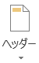

タブをクリックします
タブをクリックしますlayout: page title: ワードプロセッサによる文書編集（１） date: 2016-03-16 09:52:11 +0900 purposes: - Microsoft Wordを用いた文書作成の基本の習得 flowplayer_conf: - embed: false
{% screenshot word_shinki.png "新規作成" %}
ここで、新規に文章を作成するか、あるいは既存の文章ファイルを開くかを選びます。
新規に作成する場合は、右側のサムネイルから利用したいテンプレートを選ぶことで、そのテンプレートを適用したファイルが新規作成されます。
また既存ファイルの場合は、Windows エクスプローラーで目的のファイルのあるフォルダに移動し、そのアイコンをダブルクリックで開くこともできます。
タブをクリックします全てのアプリケーションに共通することですが、様々なトラブルにより制作途中のデータが失われてしまうことがあります。それを防ぐためにも、こまめに保存するように心がけましょう。
タブをクリックします保存形式は[名前を付けて保存]のウィンドウで[ファイルの種類]から選択することができます。
{% screenshot word_document_file.png "名前を付けて保存" %}
もしくは [エクスポート] からファイルの種類の変更をすることも可能です。
{% screenshot word_export.png "エクスポート" %}
情報処理教室では、PDFを印刷すると、システム上の理由で印刷にかなりの時間がかかってしまいます。
をクリックしますあるいは、クイックアクセスツールバーの  をクリックします。
をクリックします。
をクリックします開いているファイルを閉じるだけで、Word は終了しません。
ウィンドウ右上の閉じるボタンをクリックします。
ウィンドウ各部の名称や基本操作は Microsoft Office 2013 の各製品（Word, Excel, PowerPoint など）で共通です。
{% screenshot word_window.png "ウィンドウ各部の名称" %}
よく使うコマンドを表示しておくことができます。
{% screenshot word_quick.png "クイックアクセスツールバー" %}
初期設定で表示されているアイコンとその機能は以下の通りです。
上書き保存 元に戻す
元に戻す 繰り返す
繰り返すをクリックすると、表示するアイコンをカスタマイズできます。
ファイルタブには、新規文書の作成、既存文章を開く、保存、印刷など文書ファイルを操作するコマンドが並んでいます。
{% screenshot word_filemenu.png "ファイルタブ" %}
また、[オプション] で、Word自体のより詳細な設定を行うことができます。
文書を作成していく際によく利用するコマンドを割り当てたボタンが機能ごとにパネルに分類されています。
リボン上部のタブ状になった[ホーム]、[挿入]、[ページレイアウト]、[参考資料]、[差し込み文書]、[校閲]、[表示]をクリックすることによって、各機能のパネルに切り替えることができます。 もしくは、カーソルリボン上にあるときにホイールを回すと、切り替えることができます。
主に文字の装飾、切り貼り、編集など文字に関係したコマンドがあります。
{% screenshot word_ribbon_home.png "リボン ホーム" %}
表や図、ヘッダーやフッターなどを挿入します。
{% screenshot word_ribbon_insert.png "リボン 挿入" %}
ドキュメント全体のテーマや配色、書式などが設定できます。
{% screenshot word_ribbon_design.png "リボン デザイン" %}
ページのレイアウト、見やすさを設定します。
{% screenshot word_ribbon_page.png "リボン ページ レイアウト" %}
目次や脚注など、文書を補助する資料を挿入します。
{% screenshot word_ribbon_reference.png "リボン 参考資料" %}
はがきなど、特殊なレイアウトの文書を作ることができます。
{% screenshot word_ribbon_insertsent.png "リボン 差し込み文書" %}
スペルチェックや文字カウント、コメントの挿入などできあがった文書を校正したり、また、訂正した部分の比較などを行うことができます。
{% screenshot word_ribbon_correct.png "リボン 校閲" %}
Wordの画面での表示の仕方を設定します。
{% screenshot word_ribbon_show.png "リボン 表示" %}
パネルの右下にある  を押すと、より詳しく各項目を設定することができます。
を押すと、より詳しく各項目を設定することができます。
{% screenshot word_fontmore.png "フォント" %}
{% screenshot word_fontwindow.png "フォント" %}
また、カーソルを使用したいコマンドの上で静止させると、そのコマンドの説明を見ることができます。
{% appendix ../../appendix/shortcuts.html "主なショートカットキー一覧" %}
ここで標準的な文書作成工程をたどりましょう。少し長い文章を入力し、その後、書類の書式を整形します。 そして、ヘッダー、フッター等を入れて仕上げます。
"白紙の文書" を新規作成し、そこに課題文章をキーボードから入力します。 コピー＆ペーストは行わないでください。 この文書を基に書類を作成していきます。
まずはスタイル等は気にせず、とにかく入力しましょう。文章は段落分けで改行するときのみ[Enter]キーで改行します。とりあえず、段落第1行目のスペース（インデント）も無視して結構です。改行以外の文章の構成は無視してください。
このような形になっていれば大丈夫です。
{% screenshot word01_01introduce.png "自己紹介" %}
また、編集内容を失わないためにも、こまめに保存する癖をつけるようにしましょう。ファイル名はintroduce.docxとして、授業用のフォルダに保存します。
{% screencast fontsize "文字のサイズ設定" %}
まず、文書の文字の大きさを整えます。
① 最初の行の "自己紹介カード" を選択（ドラッグ）し、フォントサイズを16ptに変更します。
{% screenshot word01_02font.png "" %}
② 同様に、2行目の"氏名"、4行目の"所属"、6行目の"趣味"、10行目の"自己紹介文"を14ptにします。
{% screenshot word01_03font.png "" %}
③ さらに3行目の"首都 大"も12ptに変更します。
{% screenshot word01_04font.png "" %}
Wordでは、その他にも色々なスタイルに文字を変えることができます。
次に、文字の位置を揃えます。通常では両端揃えになっており、左の端から右の端まで改行するまで文章を続けるになります。レイアウトを考える中で、左揃えや右揃え、中央揃えを効果的に用いると、見やすい書類を作成することができます。また、左右の余白に応じて文字を均等に振り分ける均等割り付けもあります。
① 最初の行の左横にカーソルを持って行きます。
② すると、カーソルの矢印の向きが左上から右上に変わります。その状態で左クリックすると、行全体を選択することができます。
③ [ホーム]リボン の "段落" から をクリックして、文字を揃えます。
{% screenshot word01_06centering.png "" %}
これで、この書類の題名となる"自己紹介カード"が見やすくなりました。
段落番号や箇条書きを用いることで書類の情報をわかりやすく見る人に伝えることができます。 まずは、段落番号を付けてみましょう。
① "氏名"、"所属"、"趣味"、"自己紹介文"を選択します。複数選択するためには、 [Ctrl] キーを押しながら選択します。
{% screenshot word01_07centering.png "" %}
②  をクリックします。
をクリックします。
{% screenshot word01_08num.png "" %}
{% screenshot word01_09num.png "" %}
このように、段落番号をつけることができます。 同様にして、趣味の内容を箇条書きにしてみましょう。 箇条書きの記号はデフォルトでは●ですが、カスタマイズすることもできます。
① "読書"、"水泳"、"旅行"を選択します。
{% screenshot word01_10point.png "" %}
{% screenshot word01_11point.png "" %}
②  の横の下向き三角をクリックします。
の横の下向き三角をクリックします。
{% screenshot word01_12point.png "" %}
③ 表示された行頭文字ライブラリの中から好きなものを選ことができます。
{% screenshot word01_13point.png "" %}
ライブラリの中にない文字や画像も"新しい行頭文字の定義"を押すことで設定することができます。 段落番号も箇条書きと同じようにカスタマイズすることができます。
インデントを設定することによって、余白をうまく利用することができます。
現在の状態では、項目となる"氏名"や"所属"、"趣味"、"自己紹介文"の番号とそれぞれの内容が同じ高さで表示されてしまっていて、見にくいです。これらを項目の下につけるために、インデントを用います。
その他、段落の1行目は1字下げ、2行目以降は下げずに文章を続けていくという日本語の特徴的な文法もインデントによって設定することができます。
まず、ルーラーが非表示になっている場合、[表示]リボン の "表示" から □ルーラー のチェックボックスにチェックを入れて、ルーラーを表示しましょう。
{% screenshot word01_15indent.png "ルーラーの表示／非表示" %}
{% screenshot word01_16indent.png "ルーラーの表示／非表示" %}
インデントにはそれぞれ以下の役割があります。
{% screenshot word_ruler.png "ルーラー" %}
① 自己紹介文の内容（はじめまして〜）を選択してください。
{% screenshot word01_17indent.png "" %}
② 1行目のインデントを1文字分右に動かします。
{% screenshot word01_18indent.png "" %}
{% screenshot word01_19indent.png "" %}
自己紹介文の内容の1行目を1字下がりました。次に、各項目の内容を下げます。
① 以下の画像のように内容となる部分を全て選択してください。
{% screenshot word01_20indent.png "" %}
② 左インデントを 2 文字分右に動かします。
{% screenshot word01_21indent.png "" %}
{% screenshot word01_22indent.png "" %}
これで随分と見やすくなりました。 また、左インデントは [ホーム]リボンの "段落" にある や でもずらすことができます。
インデントはこの他、段落の詳細設定からより詳しく設定することができます。
[ホーム] リボン - "段落"パネルの右下の をクリックします。
{% screenshot word01_23indent.png "段落" %}
{% screenshot word_indentwindow.png "段落" %}
また、ページのレイアウト全体の設定を行うこともできます。[ページレイアウト] リボン - "ページ設定"パネルの右下の をクリックします。
{% screenshot word01_23indent.png "ページ設定" %} {% screenshot word_layoutwindow.png "ページ設定" %}
1 ページの行数や文字数などを設定することができます。
{% appendix ../appendix/linespace.html "行の間隔を設定する" %}
最後にヘッダーとフッターを設定しましょう。
① [挿入] リボン -  をクリックします。
{% screenshot word01_24header.png "" %}
② [空白] を選択します。
{% screenshot word01_25header.png "" %}
{% screenshot word01_26header.png "" %}
③ ヘッダーに自分の学修番号と氏名を入力してください。
{% screenshot word01_27header.png "" %}
これでヘッダー部分に学修番号と氏名が設定できました。 ヘッダーやフッターを編集していると、リボンに [ヘッダー/フッター ツール] が表示されます。 次にフッターを設定します。先ほどと同じ[挿入]リボンからも操作可能ですが、現在表示されている [ヘッダー/フッター ツール] から操作してみることにします。
① [ヘッダー/フッター ツール] [デザイン] リボン -  をクリックします。
をクリックします。
{% screenshot word01_28footer.png "" %}
② "ページの下部" - "番号のみ2" を選択します。
{% screenshot word01_29footer.png "" %}
{% screenshot word01_30footer.png "" %}
これでフッターにページ数が入りました。 また[ヘッダーとフッターを閉じる] で通常の編集画面に戻ることができます。 {% screenshot word01_31footer.png "" %}
ヘッダーとフッターにはこの他様々な情報を入れることができます。 これでほぼ完成しました。後は、見やすいように微調整してください。
今回作った課題を参考に自分の自己紹介カードを作成してください。ただし、以下の条件は満たすものとします。